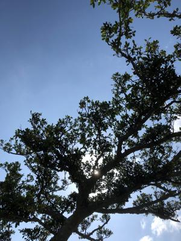
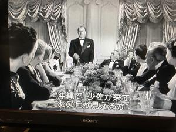

うるがいの話 ある日
最新: 我等の生涯の最良の年【うるがいの話 ある日】とは 一日だけのプログです
『うるがいの話』の最新一日だけのプログで、通信料が少なく経済的だ。カニの画像をクリックすると全ての日付が載る『うるがいの話』サイトを表示します
|
|
【うるがいの話】 うるがい(ｳﾙｶﾞｲ urugai)とは、『もずくがに』の名前でとても大きくなります。 |
|---|---|
|
|
【カミマヤーの話】 猫のことを方言でマヤーといいます。カミマヤー（kamimayaa）とは、神の猫のことです。 |
|
【たながぁの音楽】 たながぁ（ﾀﾅｶﾞｰtanagaa）とは手長えびのことで、何種類かあり大きいのは車 エビぐらいになります。 |

|
【ぶながぁの話】 ぶながー(bunagaa)とは、赤い髪の毛、赤い身体、そして身長は１ｍ２０ｃｍ ぐらい、川の蟹を食べているの目撃された。場所は沖縄県国頭郡大宜味村のと ある村僕の隣近所に住んでいる爺さんから、聞いた話です。 |
|
|
【ギーマの話】 ギーマ(giima)とは、山原の里山に咲くスズランに似た、 花を付けます。実は食べられます、 気が付くと口の周りが紫になっています。 |
2022年04月10日 (日）我等の生涯の最良の年
15:16

２日間かかって２時間５１分もある映画を録画でみた。第二次世界大戦終了後
直後の１９４６年に製作と開始にテロップで流れたのでなんと古いと思ったが
、とりあえず観てみるかと、イントロの５分でなんか面白そう（後で調べると
アカデミー賞作品だった）。『沖縄で少佐が来て”あの丘が見えるか”』と字
幕が！、おお、あの「嘉数高地、前田高地」（『ハクソー・リッジ）』（メル
・ギブソン監督作品）ジャン。もと銀行員だった復員兵だったアルが、元の銀
行に戻り、担保もない復員兵へ融資したのを銀行で咎められた直後のパーティ
でスピーチしたシーンである。なおこれ以上はネタバレなので割愛する。それ
にしてもこの時代にウクライナの戦争が、起こっているのは憤りしかない。い
い作品は白黒でもいいもんだ、なぜ最良の年なのか分からず、またもや異訳か
と思ったが、「The Best Years of Our Lives」なのでそのまま。
『我等の生涯の最良の年』

１５時０４分 ビットコインの総資産 ￥１５、３８１↑